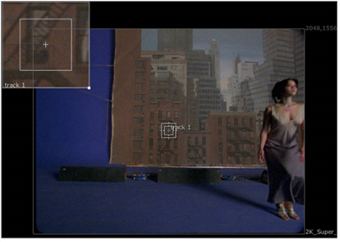

您可以根据需要添加任意数量的轨道锚，这取决于您希望跟踪的转换组件。例如，当跟踪失真或噪音的区域时，最好添加大量跟踪锚，然后平均结果以获得更好的整体跟踪。
| 1。 | 启用 快速添加 按钮 并在查看器中单击以添加跟踪锚点，或单击 添加轨道 在 跟踪器 在 “属性” 面板中选择 “创建所需数量的锚点”。 |
注意: 持有 Ctrl / Cmd Alt 在查看器中单击也可以启用快速添加模式。
新锚点总是出现在当前查看器的中心。您还会注意到浏览器左上角的锚缩放窗口。这允许您准确定位跟踪锚，而无需缩放整个查看器。

| 2. | 使用面板左侧的复选框暂时禁用轨迹，或者通过在 轨道 列表并单击 删除 轨道 . |
|
|